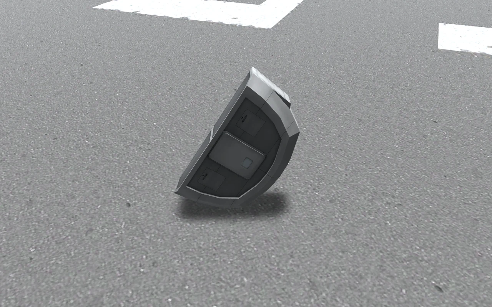
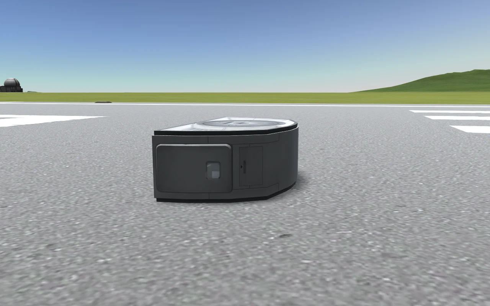
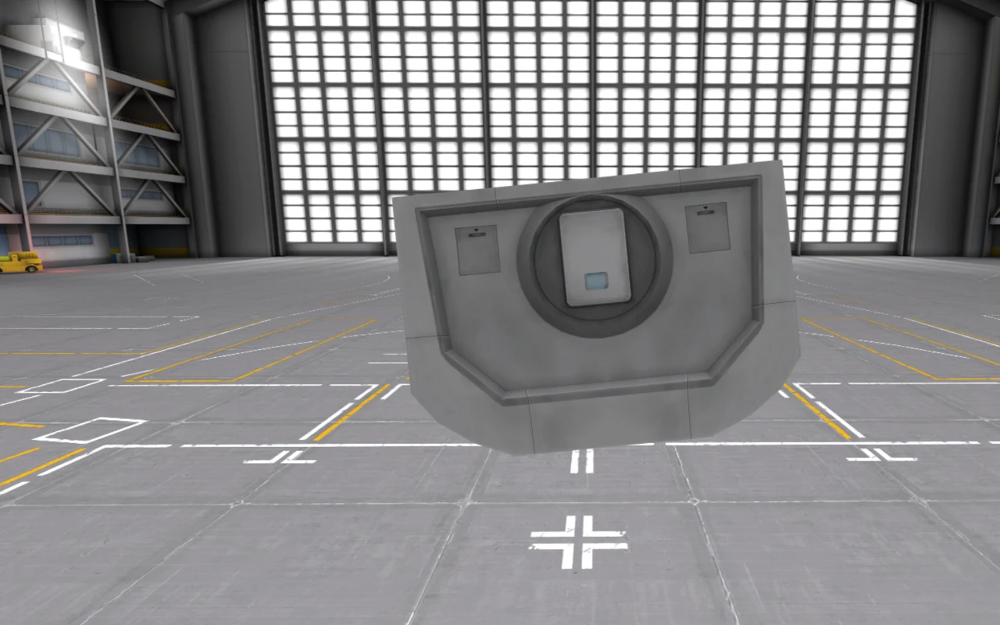
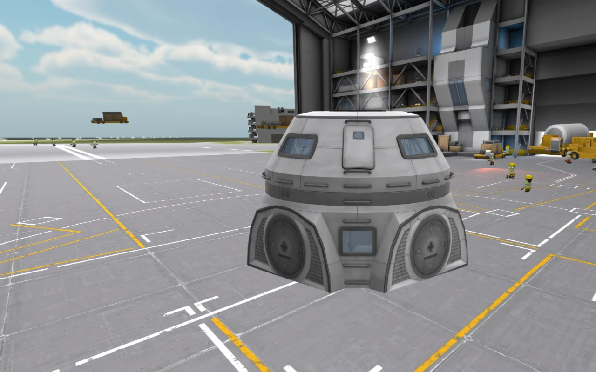
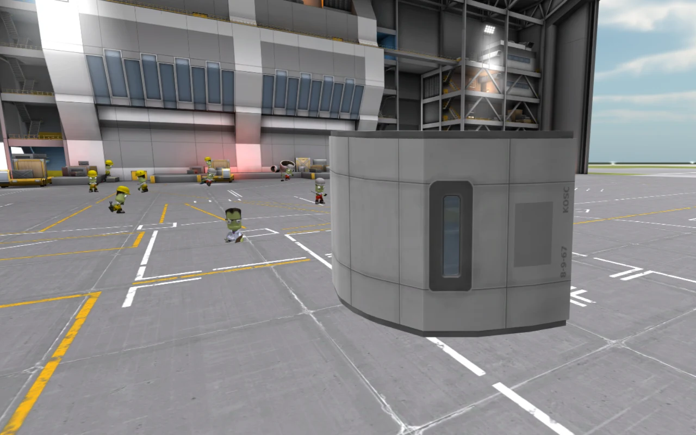

← Back to supported mods
Parts
K&K Airlock


K&K Airlock Mid-Section


K&K Garage Adapter


K&K Planetary Central Hub


K&K Planetary Command Module


K&K Planetary Cupola
K&K Planetary Greenhouse
K&K Planetary Habitat MK1
K&K Planetary Habitat MK2
K&K Planetary Laboratory